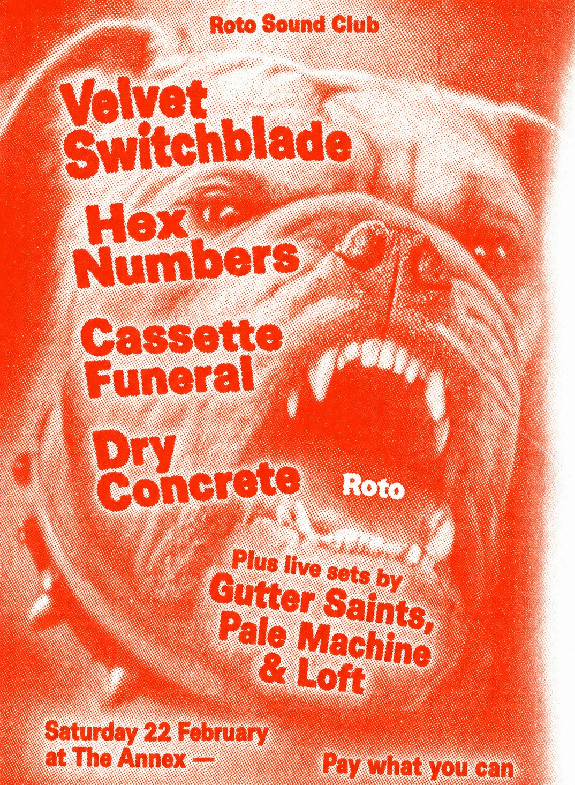
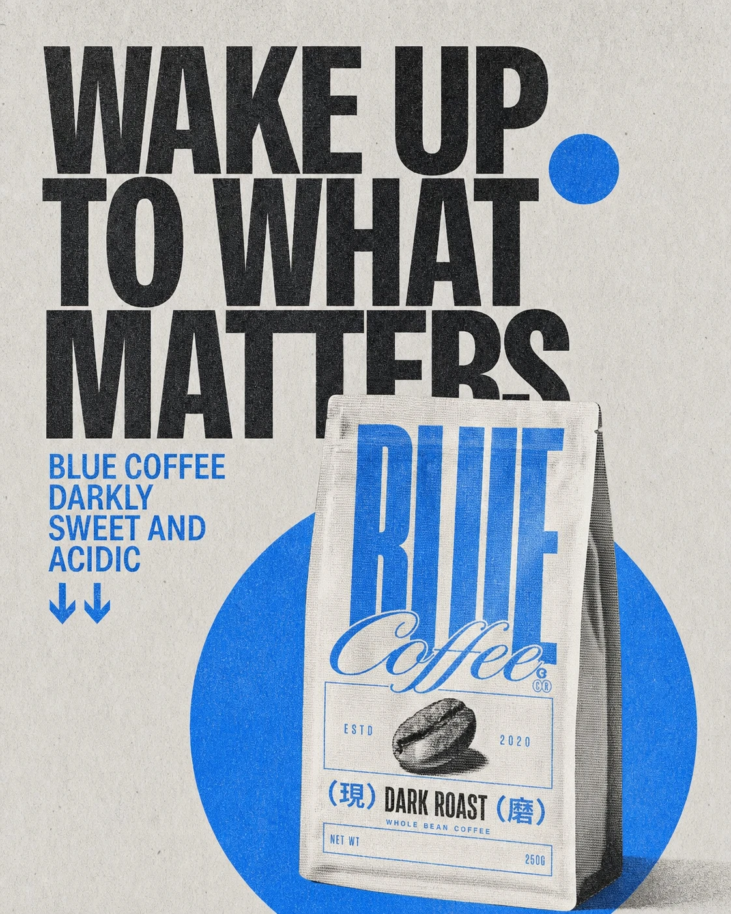
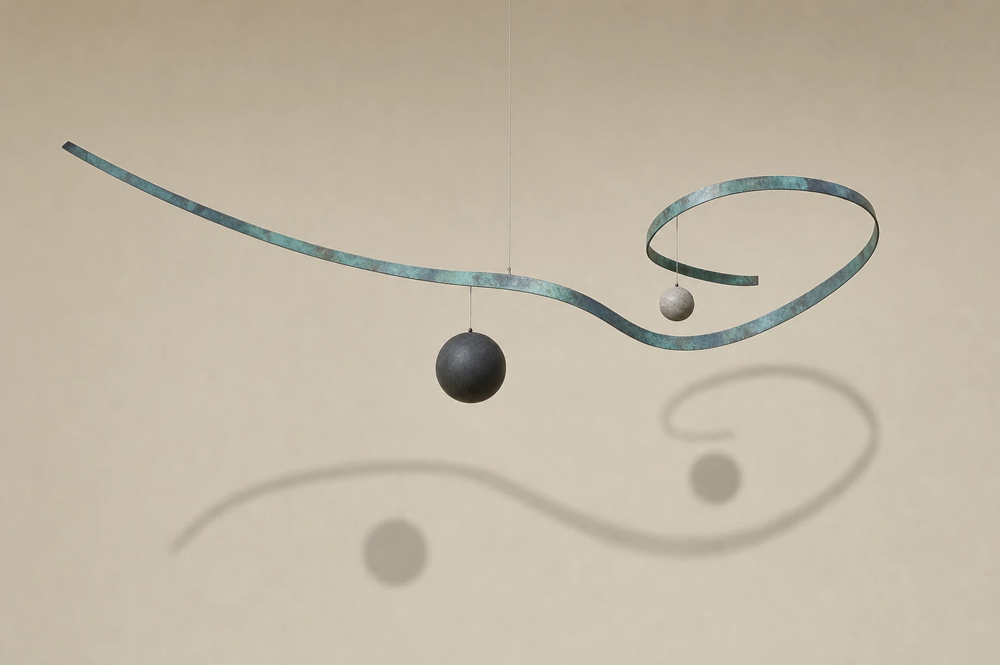
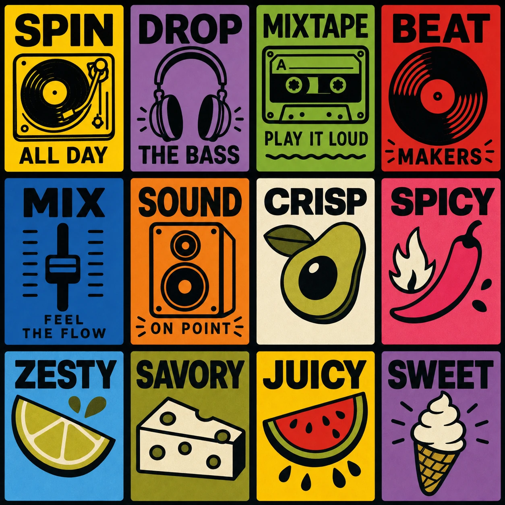

92/100
Controlled noise; hierarchy survives.

Controlled noise; hierarchy survives.

Coherent campaign; flavor copy recedes.

Balanced tension; support feels fragile.

Strong family; meaning is uneven.

Details scatter; time and venue lose contrast.